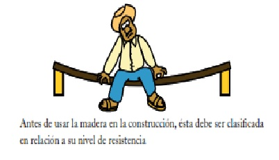
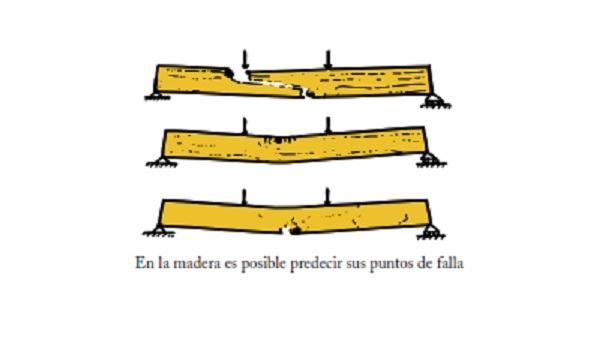

1.1. Estructura de la Madera
La madera es el tejido leñoso que forman la parte del fuste, ramas y raíces de los árboles. Está formada por células alargadas, tubiformes, orientadas en su gran mayoría en dirección paralela al eje del tronco, con algunas otras en dirección radial a la circunferencia. La madera de las especies coníferas, como el pino, está formada mayoritariamente por un solo tipo de células largas, mientras que la madera de las especies latifoliadas, que presentan hojas planas y anchas, presenta una mayor diversidad de tipos de células especializadas, como son fibras, elementos de vaso y células parenquimáticas, lo que hace diferentes a la madera de las coníferas de la de las latifoliadas, tanto en estructura, propiedades físicas y propiedades mecánicas.
1.2. Propiedades Físicas
La madera presenta propiedades físicas muy favorables para la construcción, en comparación con otros materiales, como son su densidad básica baja, lo que la hace un material ligero en comparación con el concreto o el acero, y un material poroso, que le da buenas propiedades de aislación térmica, eléctrica y acústica, adecuada para el confort en las construcciones.
No obstante, también presenta propiedades físicas limitantes, como el hecho de tratarse de un material higroscópico, propiedad que le permite adsorber y ceder humedad, en forma de vapor, al medio ambiente. Dichas variaciones en su contenido de humedad, van acompañadas de contracciones o hinchamientos de sus dimensiones; al mismo tiempo, los cambios dimensionales pueden provocar la deformación de la madera y una variación en su resistencia mecánica.
1.3. Propiedades Mecánicas
La madera posee una alta resistencia mecánica para su reducido peso, al compararse con otros materiales de construcción. Dicha resistencia mecánica se manifiesta con diferente capacidad según sea la dirección de la carga o esfuerzo con respecto al hilo de la madera.
La madera presenta su más alta resistencia a esfuerzos de tracción en dirección paralela a la fibra y, por el contrario, su más baja resistencia es a esfuerzos de tracción, pero en dirección perpendicular a la fibra.
La resistencia mecánica de la madera se ve afectada por las variaciones en el contenido de humedad, por la presencia de defectos como nudos, rajaduras y desviación de la fibra, así como por el ataque de hongos (pudrición). Además, las variaciones naturales de crecimiento del árbol pueden hacer variar su densidad y, con ello, la capacidad de soportar cargas, por lo que debe revisarse y seleccionarse cuidadosamente la madera a usar en la construcción.
